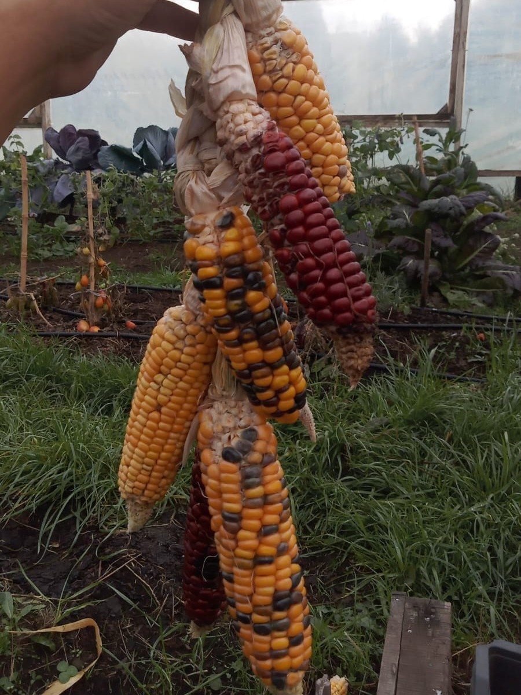
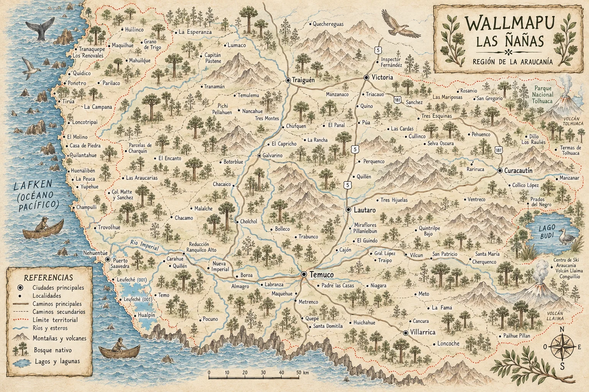

Entra y recorre, sé parte de esta historia.Las Ñañas también se construyen contigo.
Kimün
La tierra trabaja en red.
Las Ñañas: trabajo colaborativo, territorio y saberes compartidos.

Quiénes somos
Somos una red de mujeres que une experiencias, oficios y aprendizajes para cuidar la vida comunitaria desde Wallmapu.

Nuestra misión
Fortalecemos la colaboración, resguardamos los saberes y acompañamos iniciativas que cuidan las semillas, la biodiversidad y el territorio.

Nuestros sueños
Soñamos con comunidades conectadas, autónomas y solidarias, donde los conocimientos circulen y cada generación pueda sembrar un futuro digno.

Vivamos este viaje
Te invitamos a aprender, compartir y aportar junto a Las Ñañas, en una red que crece desde el cuidado y la reciprocidad.
Pu lamngen
Las Ñañas: Red que se sostiene entre muchas.
Presiona las tarjetas para conocer la labor territorial de cada ñaña.
Mapu · territorio vivo
Un mapa para recorrer nuestras conexiones.
Selecciona un pin para conocer iniciativas, lugares y aprendizajes que dan vida a Las Ñañas.

ECOSISTEMA LAS ÑAÑAS
Descubre nuestros productos, servicios técnicos y voluntariado.
Preguntas frecuentes
Conversemos con claridad.
01¿Qué es Las Ñañas?
Las Ñañas es un proyecto agroecológico que nace desde el vínculo con el territorio, la producción responsable de alimentos, la protección de semillas y la recuperación de saberes relacionados con la tierra y la biodiversidad.
02¿Dónde nace el proyecto Las Ñañas?
Las Ñañas nace en territorio de La Araucanía, desde una mirada de respeto hacia la naturaleza, los ciclos agrícolas y los conocimientos comunitarios que han cuidado la tierra por generaciones.
03¿Qué productos ofrecen?
Trabajamos con productos agroecológicos como hortalizas, semillas, plantas nativas, productos elaborados y otros elementos vinculados al cuidado de la tierra.
04¿Qué significa que sus productos sean agroecológicos?
La agroecología busca producir alimentos respetando los ecosistemas, reduciendo impactos negativos y fortaleciendo la biodiversidad del territorio.
05¿Venden semillas o plantas nativas?
Sí, uno de nuestros objetivos es fortalecer la conservación y circulación de semillas, además de promover plantas nativas y especies adaptadas al territorio.
06¿Cómo puedo comprar productos de Las Ñañas?
Puedes contactarnos directamente a través de nuestro formulario, redes sociales o WhatsApp para consultar disponibilidad, formatos de venta y fechas de entrega.
07¿Realizan envíos o entregas?
Actualmente trabajamos con modalidades de entrega que dependen del producto, ubicación y disponibilidad. Contáctanos para revisar las opciones disponibles.
08¿Realizan talleres o actividades educativas?
Sí, Las Ñañas busca compartir conocimientos relacionados con agroecología, semillas, cultivo, biodiversidad y conexión con el territorio mediante talleres y actividades comunitarias.
09¿Cómo puedo apoyar el proyecto?
Puedes apoyar comprando nuestros productos, participando en actividades, difundiendo nuestro trabajo o colaborando en iniciativas relacionadas con la protección de semillas y biodiversidad.
10¿Las Ñañas trabaja con comunidades u organizaciones?
Sí, buscamos generar redes de colaboración con personas, organizaciones y comunidades que compartan una visión de cuidado territorial, soberanía alimentaria y desarrollo sostenible.
Conectemos · Ruka
Contacto & Ruka
¿Tienes dudas, quieres comercializar tus semillas o necesitas contratar nuestros servicios técnicos? Escríbenos directamente.
nanamapuche@gmail.comRegión de La Araucanía, Chile
lasñañas.cl